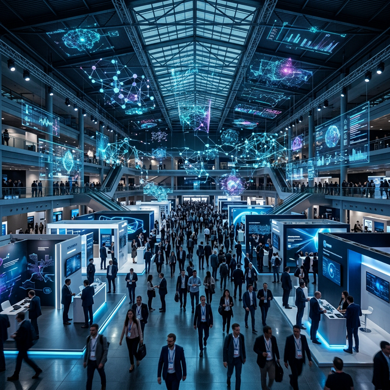

If anything became clear at Mobile World Congress 2026 in Barcelona, it is that artificial intelligence is no longer presented as a decorative novelty or a simple add-on feature. In this edition, AI appeared as the foundation of a new digital era where networks, services, enterprise platforms and devices are beginning to integrate under a single operational logic.
During the event, the focus was not solely on virtual assistants or general-purpose generative tools. The conversation shifted towards how AI can sustain critical operations, improve network management, strengthen security and enable new service models in telecommunications, enterprises and cities.
A shift in perspective
This change in focus is important because it marks a difference from previous years. Before, much of the tech discourse revolved around the end-user experience. In 2026, AI was presented as a cross-cutting layer that supports digital infrastructure and enables the automation of real processes.
The institutional message of the congress was also significant: complete the 5G rollout, advance towards a more open and inclusive artificial intelligence, and strengthen digital security against fraud and cybercrime. This indicates that the industry is no longer debating whether AI will be important, but how to integrate it in a useful, secure and scalable way.
AI enters a maturity phase
From a business perspective, the main takeaway is that AI is entering a maturity phase. It is expected to generate productivity, reduce time, improve decision-making and enable the automation of tasks that previously required constant human intervention. In other words, it stopped being a flashy concept and became part of the architecture of the digital business.
Sources
GSMA / MWC Barcelona: MWC26 opening and sector priorities.
Xinhua: MWC 2026 closing review and evolution towards AI, cloud and data ecosystems.
RCRTech: analysis on the central role of AI at MWC Barcelona 2026.